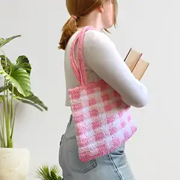

About

Learning to Crochet
Learning something new can feel intimidating, but crochet is easier than you might think. This site is designed to guide you step by step, helping you build confidence as you learn new stitches and techniques at your own pace. Remember, you can do anything you set your mind to.
The best way to start crocheting is to begin with the basics and learn at the speed you want to go, crochet is supposed to be relaxing. Start with a simple crochet hook, some medium-weight yarn, and a few beginner stitches like the chain stitch and single crochet. Don't worry if your first projects aren't perfect. Every crocheter started as a beginner, and each stitch is a step toward building a skill you'll enjoy for years to come.
Who Am I
Hi! My name is Lydia, and I have been passionate about crochet since I was six years old. What started as a childhood hobby quickly became a lifelong love for fiber arts and the creativity they inspire. Over the years, I have enjoyed making everything from simple beginner projects to more intricate creations, and I've discovered that one of the most rewarding parts of crocheting is sharing that knowledge with others.
I love teaching fiber arts because I believe anyone can learn with a little patience, encouragement, and practice. Whether you're picking up a crochet hook for the very first time or looking to expand your skills, my goal is to help make the learning process fun, approachable, and enjoyable. Through this website, I hope to share my experience, inspire creativity, and help you build the confidence to create projects you'll be proud of.
Business Address
Crochet Corner100 W 100 N
Pleasant Grove, UT 84062
Call us at 801-123-4567 to schedule a visit